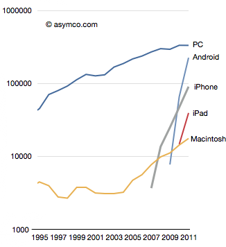

The Post-PC Era
© Steve Jobs
- Smartphones and tablets:
the defining personal computing platforms - The rise of mobile browsing

Responsive Web Design
- Offering an optimal user experience on a large variety of devices
- Desktop computer monitors
- Tablets
- Smartphones
- TV
- …
Using a single website
- Avoid browser sniffing (user agent)
- Avoid development of a whole website for mobile (code duplication)
- A website for mobile?
- + for tablet?
- + for … ?
Instead of looking at the type of a device…
- Progressive enhancement based on feature detection
- Re-architecturing the content
- Instead of developing a native app
- Instead of developing separate websites
Media Queries
Looking at the capability of the device
- Width & height of the browser window
- Device width & height
- Orientation (landscape or portrait)
- Resolution (pixel density)
Concepts
A pixel’s not a pixel
- Using CSS3 media queries
- Adapting the layout to the viewing environment
- Fluid layout: elements sizing in relative units
- Images and video in relative units (up to 100% of the container)
- Hi-DPI devices
Breakpoints
- Widths of devices
- Two breakpoints for mobile
- Two breakpoints for tablets
- …
- For whatever you need
Columns: 5 … 4 … 3 … 2 … 1
Launch the demo
- Setting the viewport
<meta name="viewport"
content="width=device-width, initial-scale=1.0" />- Classic CSS linking
<link rel="stylesheet" href="styles.css" />- CSS Media Queries
@media screen and (max-width: 740px) { … }Natural breakpoints
- Too many devices
- Smallest and largest screen sizes
- Fluid layout between breakpoints
- Stretching the layout until it breaks…
set a breakpoint here… repeat - Units in em (size of text) instead of px
Advantages
- Future ready
- Avoiding unnecessary breakpoints
- A website can look good both on tablet and desktop
- Unpredictable devices: TV screens
Mobile first or desktop first?
- Mobile first starting with the minimum viewport width
- Desktop first starting with the maximum viewport width
- Both have advantages and drawbacks
- It depends on the target
- Supporting the legacy desktop first is the natural choice
Legacy browsers
- Older browsers (IE 7, 8) are only on desktop
- Desktop first, and media queries will be ignored
- Using a fixed width layout
- JavaScript polyfills
- Good work, Microsoft (IE 9, 10)
What I do
- Design / UX: full featured design for desktop
- Desktop first with fluid layout
- Narrowing the width until the layout looks weird
- Getting my first breakpoint
@media (max-width: value) { /* override */ }- Repeating and cascading again
Linearize content on mobile
- From grid column layout…
- … to full width columns
Images & video
- It’s that simple:
img { max-width: 100%; } - For proportionately resized images
- Delivering images at the maximum width they will be used at
- Letting the browser resize images
- The
<picture>tag: W3C draft spec
Semantic HTML
- Having a good information architecture:
a clean document outline - Avoiding classes for column widths:
using a semantic grid - Using the new tags in HTML5
<article><nav><aside><header><footer> - And it’s good for SEO
Design / UX
- Re-thinking the grid outside of pixels
- In a non fixed environment
- Importance of interaction design & information architecture
- Forget hover interactions!
Process
Thou shalt be iterative
- Iterative process with designers, front-end developers, product owners
- Importance of demos
- Front-end costs ×2
- But: no need to maintain a separate website
- Sometimes: no need for a native app
- Not everything needs to be responsive